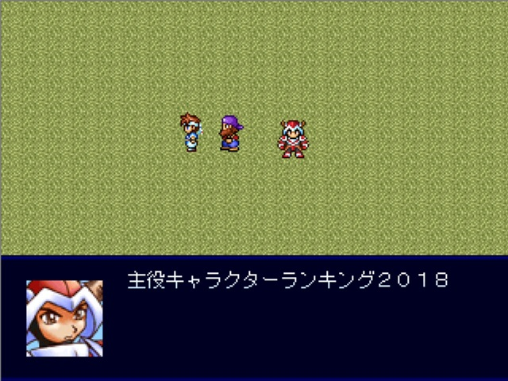

 |
|
| 作者：秋草 | |
| ツクール：2000 | |
| ジャンル：ランキング | |
| 配信/投稿：可/可 | |
| keyword：50位までのキャラ+α | |
| 投票：投票はこちら | |
| 作者コメント： 今年もやります。 2018年にスレッドに投下され作品で、各キャラが主役として登場した回数をランキング化！ 12代目手動保管庫の「メインキャラ」の項目に書かれていた数をカウントします。 果たして結果は…？ ※集計方法や記載方法は、去年のランキング(VIPRPG紅白2017 No.20)に準じた形です。 ※早ければ1月2日に提出予定。 | |
| 管理人コメント： 上位から下はその年によって結構バラけるので その年の傾向を見れるという面白さもあると思います。 |
|
| 更新履歴：01/03遅刻提出→01/09本体更新 | |
| ダウンロード / 感想掲示板 | |
| 前の作品 / 次の作品 / TOPへ戻る | |